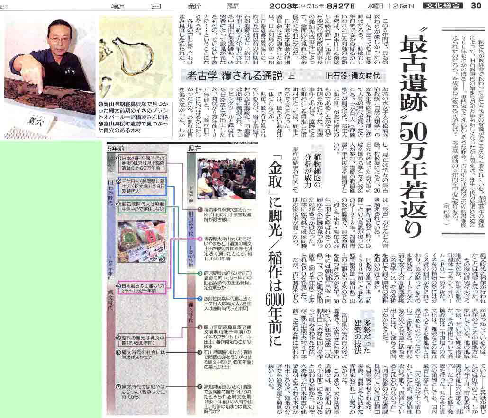
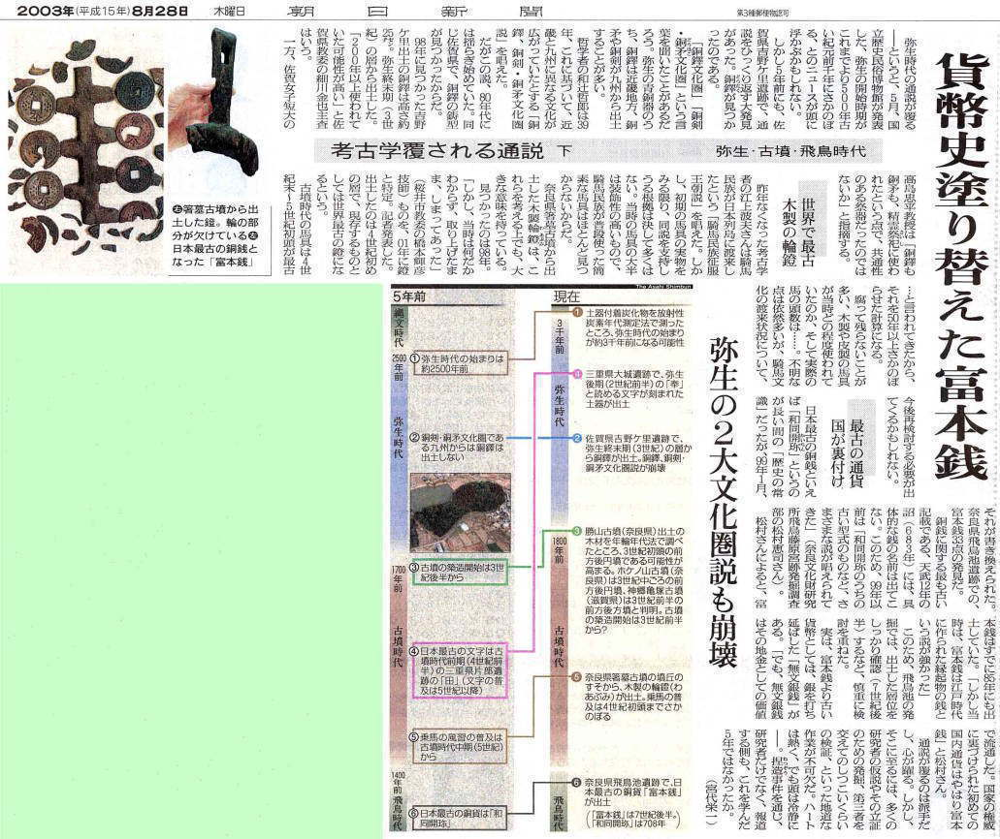

| 見たい項目をクリックして下さい | |||||||||
|
| 会員からの投稿（詳細-７） |
| 朝日新聞２００３年８月２７日・２８日 考古学 覆される通説 上下 |
|
| 最近、古代史の常識が次々と覆される。 例の捏造事件が発覚して旧石器時代が５０万年新しくなったのを考古学の陰の部分とすれば、ＡＭＳ年代測定法で弥生時代の始まりが４〜５００年遡ったのは考古学の光の部分といってもいいかもしれない。 ２００３年８月２７日と２８日の朝日新聞に、「考古学 覆される通説 上下」 と題する宮代栄一記者の記事が掲載されたので、そのまま転載する。 新聞が現われるまでしばらくお待ち下さい |
|  |
|  |
| 以上、新聞記事であるから、必ずしもバランスのよい情報とはいえないかもしれないが、最近の考古学の一端を知ることができる。 |
| 投稿の一覧表 に戻る |